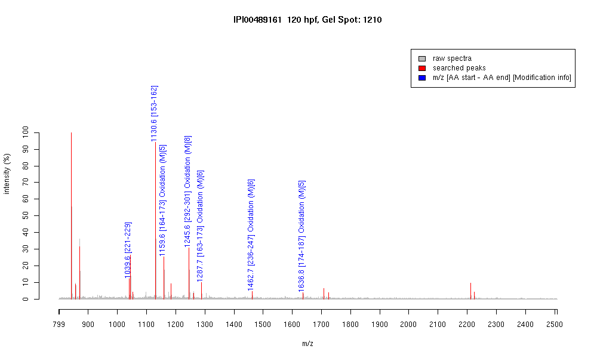

| Name | "PREDICTED: similar to Tubulin, beta, 2" |
|---|---|
| MW | 39709.1 |
| PI | 4.84 |
| Mascot Protein Score | 85 |
| Masses (matched / unmatched) | 7 / 17 |

| Peptide | MZ (calc) | MZ (observed) | Error (DA) | Error (PPM) | Start | Stop | Modifications |
|---|---|---|---|---|---|---|---|
| YLTVAAVFR | 1039.5935 | 1039.585 | -0.0085 | -8 | 221 | 229 | |
| FPGQLNADLR | 1130.5953 | 1130.593 | -0.0023 | -2 | 153 | 162 | |
| LAVNMVPFPR | 1159.6292 | 1159.6216 | -0.0076 | -7 | 164 | 173 | Oxidation (M)[5] |
| ISEQFTAMFR | 1245.5933 | 1245.5836 | -0.0097 | -8 | 292 | 301 | |
| ISEQFTAMFR | 1245.5933 | 1245.5836 | -0.0097 | -8 | 292 | 301 | Oxidation (M)[8] |
| KLAVNMVPFPR | 1287.7241 | 1287.7133 | -0.0108 | -8 | 163 | 173 | Oxidation (M)[6] |
| EVDEQMLNVQNK | 1462.6842 | 1462.6628 | -0.0214 | -15 | 236 | 247 | Oxidation (M)[6] |
| LHFFMPGFAPLTSR | 1636.8304 | 1636.8058 | -0.0246 | -15 | 174 | 187 | Oxidation (M)[5] |